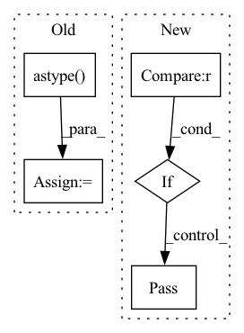

Pattern ID :28166
Before Change
if type(img) is not np.ndarray:
img = np.array(img).astype(np.uint8)
else:
img = img.astype( np.uint8)
box = [int(point) for point in box]
if copy:
img = img.copy()
img = cv2.rectangle(img, (box[0], box[1]), (box[2], box[3]), color=color, thickness=thickness,
lineType=lineType,
shift=shift)
return imgAfter Change
shift=None,
in_format=BoxFormat.XYXY,
in_source=BoxSource.Numpy):
if box is not None and len(box) == 0 :
pass
elif type(box[0]) in [tuple, list, np.ndarray]:
for b in box:
img = Box._put_box(img, b, copy, color, thickness, lineType, shift, in_format, in_source)
else:In pattern: SUPERPATTERN
Frequency: 3
Non-data size: 5
Instances Fragment ID: 83236754
Project Name: pooya-mohammadi/deep_utils
Commit Name: 8b15f681b386972f4420864506b4b3b37c8f3bc4
Time: 2021-07-15
Author: practical.ai.programming@gmail.com
File Name: deep_utils/utils/box_utils/boxes.py
M Class Name: Box
N Class Name: Box
M Method Name: put_box(9)
N Method Name: put_box(9)
M Parent Class:
N Parent Class:
M File Name: deep_utils/utils/box_utils/boxes.py
N File Name: deep_utils/utils/box_utils/boxes.py
M Start Line: 114
M End Line: 126
N Start Line: 137
N End Line: 145
Before Change
assert(False)
// only float32
self.data = data.astype( np.float32)
self.grad = None
// internal variables used for autograd graph construction
self._ctx = NoneAfter Change
elif type(data) != np.ndarray:
print("error constructing tensor with %r" % data)
assert(False)
if data.dtype != np.float32 :
// warning? float64 is actually needed for numerical jacobian
pass
self.data = data
self.grad = None
Fragment ID: 83236741
Project Name: geohot/tinygrad
Commit Name: 5e7e359706cae0e52249ccda2594e1b1707971e1
Time: 2020-10-29
Author: geohot@gmail.com
File Name: tinygrad/tensor.py
M Class Name: Tensor
N Class Name: Tensor
M Method Name: __init__(2)
N Method Name: __init__(2)
M Parent Class:
N Parent Class:
M File Name: tinygrad/tensor.py
N File Name: tinygrad/tensor.py
M Start Line: 12
M End Line: 18
N Start Line: 12
N End Line: 20
Before Change
def text_backend_adaption(text):
if _session.backend == "tensorflow":
if text.ndim==2: //gray-scale image
text= np.expand_dims(text,-1).astype( np.float32)
elif text.ndim in (3,4):
text=text.astype(np.float32)
else:
if text.ndim==2: //gray-scale imageAfter Change
elif text.ndim ==2:
text=text.astype(np.float32)
else:
if text.dtype == np.int64 :
pass
elif text.ndim ==2:
text=text.astype(np.float32)
return text
Fragment ID: 83236751
Project Name: allanyiin/trident
Commit Name: d96abdbdfe766581ae99a66332f590e3c34e8bd6
Time: 2020-11-29
Author: allan@asiaminer.com.tw
File Name: trident/data/text_common.py
M Class Name: AnonimousClass
N Class Name: AnonimousClass
M Method Name: text_backend_adaption(1)
N Method Name: text_backend_adaption(1)
M Parent Class:
N Parent Class:
M File Name: trident/data/text_common.py
N File Name: trident/data/text_common.py
M Start Line: 24
M End Line: 36
N Start Line: 23
N End Line: 33